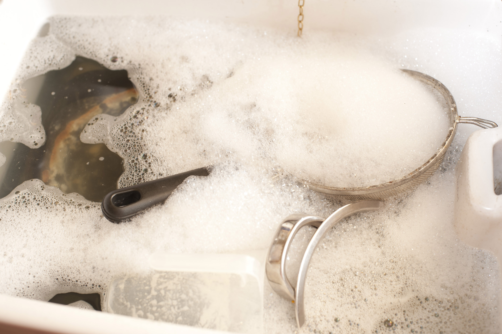

If your sink is full of water already from soaking, drain and refill it with clean, hot water. If the sink is not already full of water, still fill it with clean, hot water. Allow dishes to soak as you clean other ones.Sometimes, it is okay to skip this step if you don't have an excessive amount of dishes to clean. Though be mindful of how much water you are using.
